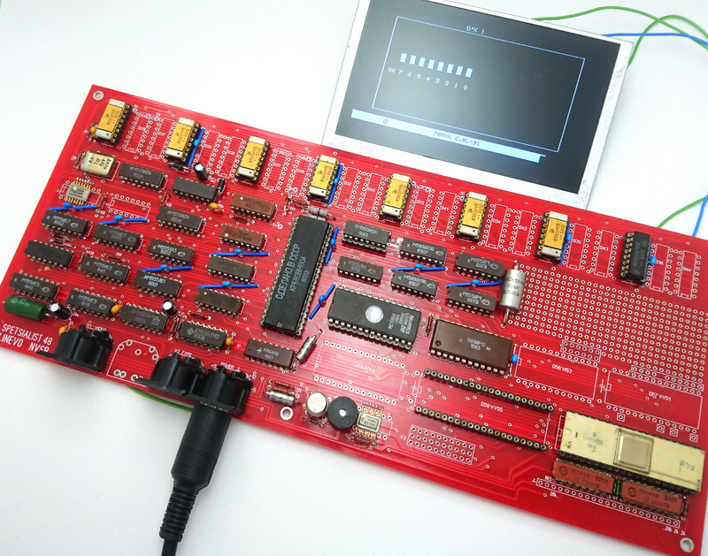

www.spetsialist-mx.ru
САЙТ О ПК "СПЕЦИАЛИСТ" И ЕГО КЛОНАХ
| |
|
| ГЛАВНАЯ | |
| ЛИК | |
| ЛИНЁВСКИЙ | |
| СПЕЦИАЛИСТ-М | |
| СЯБР | |
| УЦА | |
| ЭКСПРЕСС | |
| ЭРИК | |
| СПЕЦИАЛИСТ МХ | |
| ДРУГИЕ | |
| ССЫЛКИ | |
| ОБРАТНАЯ СВЯЗЬ |
ПК "ЛИНЁВСКИЙ"
Изготавливался в Новосибирске предположительно с 1988 г. В отличии от оригинальной схемы Анатолия Федоровича Волкова, на этой плате была разводка под микросхемы КР565РУ6. Отказ от микросхем КР565РУ3 позволил отказаться от необходимости иметь в блоке питания напряжение -5 В. Это напряжение по - прежнему требовалось для операционного усилителя в тракте чтения с магнитофона - был сделан преобразователь из +12 В в -5 В. То есть для этой платы требовался блок питания с напряжениями +5 В и +12 В. Компоновка этой платы была удобной для расширения возможностей компьютеры, чем многие и занимались. Фотографии печатной платы кликтабельны. Восстановленная плата.
На верхней фотографии компьютера присутствуют контроллеры от Vinxru.
{kind=link}
{kind=link}
{kind=link}
{kind=link}
{kind=link}
Контроллер дисководов был разработан в рамках расширений ПК "Линёвский". Разработкой занимались. Обвязка микросхемы КР1818ВГ93 была взята от контроллера дисковода для ZX Spectrum, разработанного в производственном кооперативе Himac. Стабильная работа контроллера показала, что схема эта была удачной, хотя позднее Himac внёс ещё какие - то улучшения в схему. Схема контроллера представленна ниже (кликтабельна).

В адресном пространстве компьютера контроллер дисковода занимает 8 байт. Четыре байта - это регистры микросхемы контроллера КР1818ВГ93 (в "Линёвском" это были адреса FFF4H...FFF7H) и четыре байта занимал порт со значениями сигналов DRQ и INTRQ (микросхема D7, адреса FFF0H...FFF3H). Здесь можно посмотреть программу чтения с дисков. Эта схема требует небольшой доработки (необходимо поменять подключение микросхемы D7 к шине данных - переключить на другие разряды шины данных), иначе возникают некоторые проблемы с записью на диск. Более подробно описано здесь. Ниже размещены фотографии печатной платы контроллера дисковода (кликтабельны).
{kind=link}
{kind=link}
Пользователь Cornelius переразвёл печатную плату "Линёвского" Специалиста. Внешний вид печатной платы представлен ниже. Архив гербер файлов для производства печтной платы можно найти в таблице.
 Пользователь Shumadan успешно запустил новый "Линёвский" Специалист. Фото собранной платы представлено ниже.
Пользователь Shumadan успешно запустил новый "Линёвский" Специалист. Фото собранной платы представлено ниже.

Назначение |
Схема |
Схема ПК "Специалист Линёвский" от Fifan'а
|
|
Схема контроллера дисковода ПК "Специалист Линёвский" от Fifan'а
|
|
Гербер файлы печатной платы от Cornelius'а |